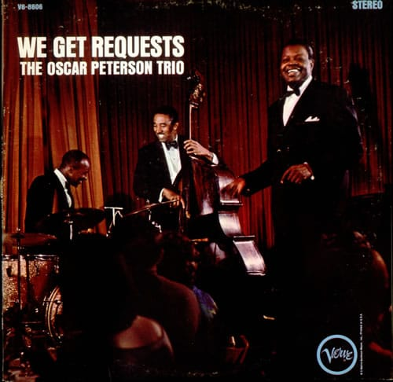

Ой, какой кайфовый альбом! Вот, например, The Girl From Ipanema.


Эдвард Нортон, Дэвид Финчер, Брэд Питт.Там еще много интересных фото)

Очень приятная фоновая музыка. Все альбомы доступны для онлайн-прослушивания на сайте автора.
Интересная статья о том, что случилось с компанией Palm, которая в свое время лидировала на рынке наладонников, потом потеряла значительную его часть по причине отсутствия замены устаревшей Palm OS и появления iPhone, но смогла собраться и сделать вполне, кажется, конкурентноспособную webOS, чего, однако, оказалось недостаточно для того, чтобы вернуться. Почитайте, интересная история. А для меня, как для одного из владельцев их продукции, еще и немного грустная.
В Сафари можно было с помощью шорткатов Command + 1-9 вызывать закладки из букмаркбара (такой хренотени с закладками, которая всегда видна).
В Гугл Хроме же с помощью этих же шорткатов осуществляется переключение между табами. Но, в отличие от закладок, которые ты расположил определенным образом и запомнил, где и что лежит (1-mail, 2-google reader, 3-lenta.ru), табы у тебя все время разные и имеют разную ширину, в итоге, в хроме я пользуюсь (и то редко) только command + 1, 2 ибо в остальных случаях надо считать, и проще просто кликнуть в нужный таб.
Для избранных букмарков можно, конечно, настроить keyword search, но делается это через попу и я уверен, что многие даже не догадываются о том, что keyword search можно использовать не только для поиска.
Вывод: такие шорткаты нужно использовать только в случае, когда связанная с ними информация меняется редко и не требует никакого “визуального” контроля.
Чуваки из “Smashing magazine” пишут о том, почему и когда можно ломать устоявшиеся шаблоны.

Оказывается, не все знают, как можно залочить мак с клавиатуры.
- Идем в настройки безопасности и ставим галочку напротив опции "Спрашивать пароль после активации скринсейвера":

- Потом идем в настройки клавиатуры, находим там группу шорткатов "Services" и вешаем шорткат на запуск скринсейвера:

Ну и напомню про самую клевую штуку — повесить Spotlight на Caps Lock!